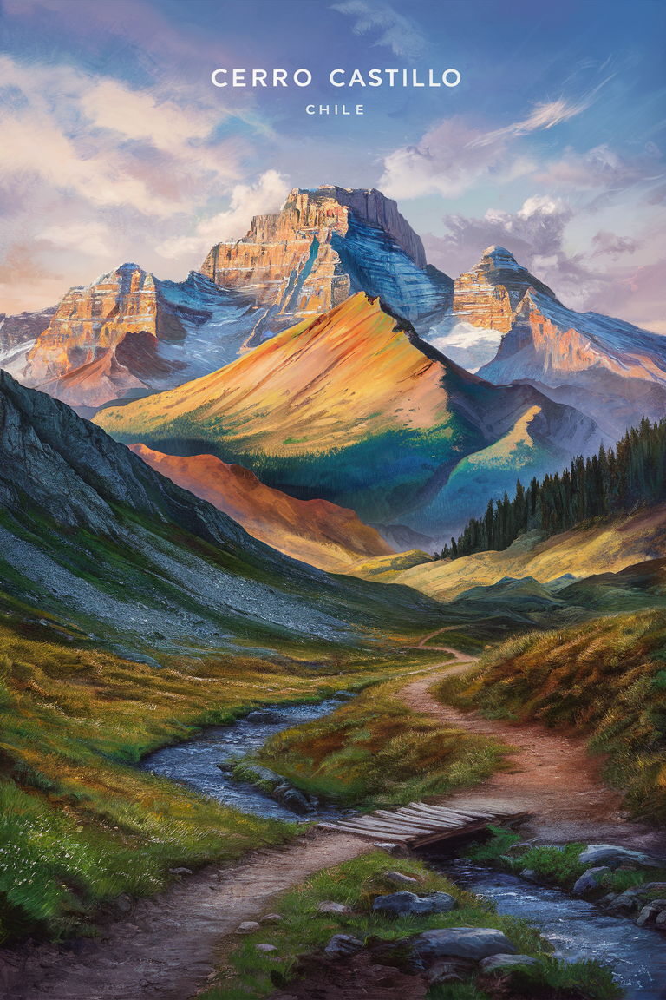

Obras mas destacadas
TORRES DEL PAINE

Creada por la Eileen Magnus.Esta pintura representa el impresionante Parque Nacional Torres del Paine, con sus montañas escarpadas, lagos color turquesa y vibrantes pastizales. La obra de arte captura los colores ricos y diversos y las texturas únicas del entorno natural, creando una sensación de serenidad y asombro. Las pinturas están imbuidas de una sensación de libertad y exploración, invitando al espectador a sumergirse en la belleza de la naturaleza chilena.
LIENZO VIBRANTE
Creada por Armin Birchmeier. Una fascinante exhibición de colores vivos y vibrantes que danzan sobre el lienzo. La pintura presenta remolinos y rayas de rojo, azul, amarillo y verde, mezclándose a la perfección. El fondo tiene un sutil efecto degradado que pasa de claro a oscuro, creando profundidad y contraste.
SINFONÍA ABSTRACTA

Creada por Veronica Charlotte. Una obra de arte abstracto vibrante y colorida, que muestra una sinfonía de tonos vivos. La pintura presenta una combinación de formas geométricas y líneas fluidas, creando una experiencia visual fascinante.
CERRO CASTILLO
Creada por el artista chileno Leonard van Buuren. Impresionante pintura de paisaje que representa el majestuoso Cerro Castillo en Chile. La cordillera está adornada con una brillante variedad de colores, que van desde azules profundos hasta naranjas y amarillos vibrantes. El cielo es un lienzo de suaves tonos pastel, con jirones de nubes flotando. En primer plano se muestra un sinuoso sendero de montaña que conduce a un pequeño y rústico puente de madera sobre un arroyo balbuceante.